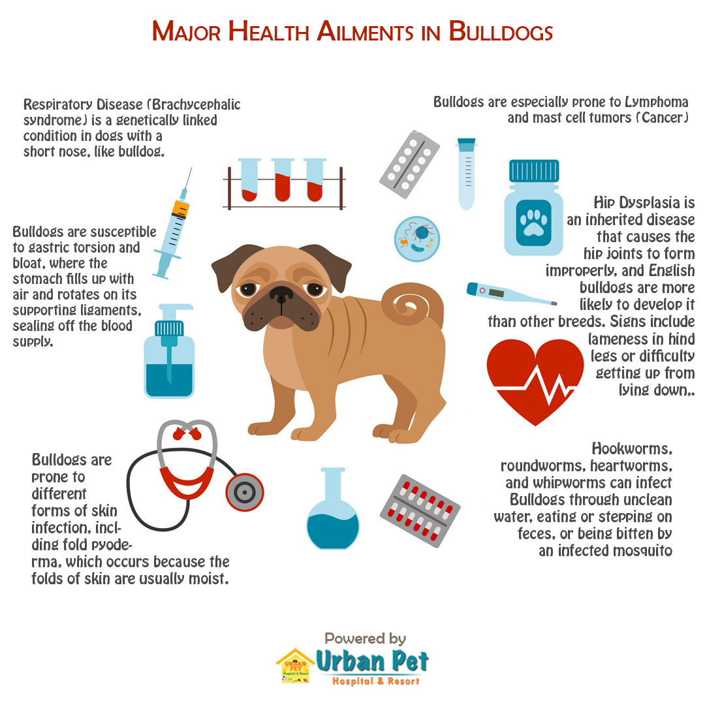

English Bulldogs & The Fad of Owning an English Bulldog
Human's Most Expensive Best Friend?
These breeding changes gave us the coveted Bulldogs we have today! But not without great consequences for the breed, as well as their owners. These consequences are medically, financially and emotionally. When thinking of the monetary aspect, this is both upfront, at purchase, and throughout the known short lifespan of the bully, due to an array of health issues resulting from the breeding alterations. So, “yah” for no more bull eating dogs, but “boo” for the magnitude of hardships that come with effects.
According to Puppies.com, the average purchase cost of an English Bulldog from a reputable breeder here in the state of Tennessee is between $1,500 - $3,500. I am an English Bulldog owner. Munson, my bully named the famous UGA Football announcer – Larry Munson, turned 11 years old on January 25th. I purchased him from a breeder in Georgia for $1,500. He has been living on borrowed time since he was eight months old, due to complications to vaccines, surgery, and spinal malformities [unknown at birth]. Over the course of his eleven years of being my snugglebully, I have spent THOUSANDS of dollars on his daily upkeep, as well as medical and emergency treatments. The Urban Pet Hospital's Blog has detailed information about all things English Bulldogs, specifying that annual Bulldog expenses can be upward of $5,000. Despite Munson’s many psychical struggles, he is such a joy for most who meet him. We have been through a lot together – A LOT! As a domestic abuse survivor, he has been my primary emotional support with lots of snuggles, many slobbery kisses, extractions from disassociative states and a reason to LIVE!

Fad or FAB
Many people desire to have an English Bulldog. According to a recent survey, the breed is the fifth most popular in the US. However, I always caution and explain both the initial and ongoing expenses of having a bully, as well the time investment. In spite of many famous people owning English Bulldogs, creating a fad, Bulldogs are well-known for certain medical conditions and complications due to their breeding.
But what's NOT to love?
- an exaggerated stout snout making melodious music, aka snoring
- stocky body shape with short hair; instead of a potbelly pig--we have a potbelly bully
- deep facial folds; cuteness overload
- a protruding lower jaw giving lots of smiles and WTF looks
- trainability
- a personality that will keep you rolling
- snuggles galore; prepare to loose your bedspace
- loud smelly FARTS that scare even themselves
- drool miles long
The FAD of the English Bulldog
- 25 Celebrities with their Bulldogs
- Stars Who Love Bulldogs!
- Celebrities and Their Bulldogs
- Famous Bulldog Owners
To own an English Bulldog is to be a good pet parent! Okay, according to Munson, it's to be a trained human!